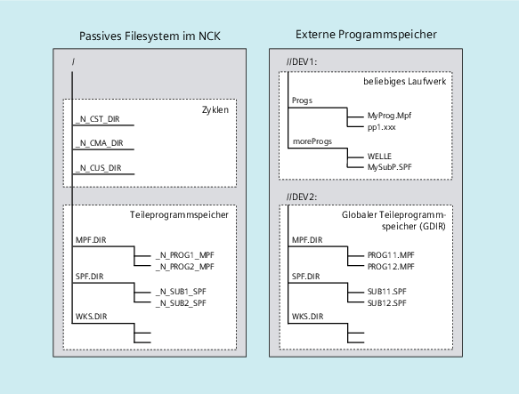

Neben dem passiven Filesystem im NC können an einer Maschine auch externe Programmspeicher verfügbar sein (z. B auf dem lokalen Laufwerk oder auf einem Netzlaufwerk).
Über die Funktionen "Abarbeiten von Extern" oder "EES (Execution from External Storage)" können Teilprogramme direkt von externen Programmspeichern abgearbeitet werden.
Weitere Informationen: Funktionshandbuch Basisfunktionen
Bei der Vereinbarung der Laufwerke kann eines der Laufwerke als globaler Teileprogrammspeicher (GDIR) ausgezeichnet werden.
Vom System werden dann automatisch die Verzeichnisse MPF.DIR, SPF.DIR und WKS.DIR auf dem Laufwerk angelegt. Diese drei Verzeichnisse bilden das GDIR.
Das GDIR spielt ausschließlich für die Funktion EES eine Rolle. Je nach Laufwerkskonfiguration ersetzt oder erweitert das GDIR den NC-Teileprogrammspeicher. Das Einrichten eines GDIR ist für den EES-Betrieb allerdings nicht zwingend erforderlich.
Die Verzeichnisse und Dateien des GDIR können im Teileprogramm auf dieselbe Art wie im passiven Filesystem adressiert werden. Damit ist eine kompatible Verlagerung eines NC-Programms mit Pfadangaben aus dem passiven Filessystem ins GDIR möglich. Das Verzeichnis SPF.DIR des GDIR ist im Suchpfad für Unterprogramme enthalten.
Die folgende Abbildung soll die Programmorganisation auf externen Programmspeichern veranschaulichen:
| Hinweis |
Um Probleme durch die Groß- und Kleinschreibung bei der Datei-Adressierung (siehe "Adressierung von Dateien des Programmspeichers") zu vermeiden, sollten case-insensitive Dateisysteme als externe Programmspeicher verwendet werden. |
Siehe auch:
Programmspeicher im NCK